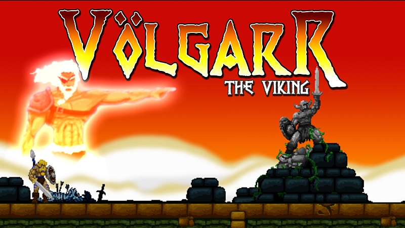
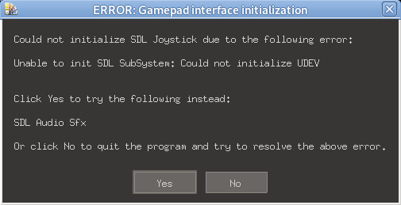
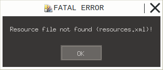
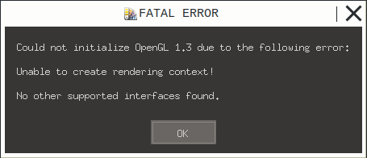

A continuación los pasos seguidos para instalar el juego Volgarr the Viking distribuido por GOG en debian.

El instalador es el archivo gog_volgarr_the_viking_2.1.0.3.sh y según la
página de gog el juego es un binario de 32 bits, por lo cual para ejecutarlo se
debe tener habilitada la arquitectura i386. En la página también se indica
que funciona en Ubuntu 18.04 32bits.
Vale la pena aclarar que tengo varias PC's con distintas versiones y configuraciones de debian, por lo cual se indicarán los pasos seguidos en cada PC.
storm: debian 11 (bullseye) - multiarch (amd64/i386)
Se ejecuta el instalador, se acepta el EULA, se elige el directorio
~/GOG Games/Volgarr the Viking para realizar la instalación y se crea el ícono
en el escritorio y la entrada en el menú.
Al ejecutar se obtiene el siguiente error:
$ "$HOME/GOG Games/Volgarr the Viking/start.sh"
Running Volgarr the Viking
libGL error: MESA-LOADER: failed to open i965: /home/ivan/GOG Games/Volgarr the Viking/lib/libstdc++.so.6: version `CXXABI_1.3.8' not found (required by /usr/lib/dri/i965_dri.so) (search paths /usr/lib/i386-linux-gnu/dri:\$${ORIGIN}/dri:/usr/lib/dri)
libGL error: failed to load driver: i965
libGL error: MESA-LOADER: failed to open i965: /home/ivan/GOG Games/Volgarr the Viking/lib/libstdc++.so.6: version `CXXABI_1.3.8' not found (required by /usr/lib/dri/i965_dri.so) (search paths /usr/lib/i386-linux-gnu/dri:\$${ORIGIN}/dri:/usr/lib/dri)
libGL error: failed to load driver: i965
libGL error: MESA-LOADER: failed to open swrast: /home/ivan/GOG Games/Volgarr the Viking/lib/libstdc++.so.6: version `CXXABI_1.3.8' not found (required by /usr/lib/dri/swrast_dri.so) (search paths /usr/lib/i386-linux-gnu/dri:\$${ORIGIN}/dri:/usr/lib/dri)
libGL error: failed to load driver: swrast
X Error of failed request: GLXBadContext
Major opcode of failed request: 152 (GLX)
Minor opcode of failed request: 6 (X_GLXIsDirect)
Serial number of failed request: 111
Current serial number in output stream: 110
No recuerdo el post donde se da como solución borrar el directorio lib del
juego, pero siguiendo el consejo:
$ mv "$HOME/GOG Games/Volgarr the Viking/lib" "$HOME/GOG Games/Volgarr the Viking/lib.old"
Ejecutando nuevamente el juego se obtiene una ventana con el siguiente mensaje:

Nuevamente, buscando en internet se encuentra en los foros de steam la
sugerencia de instalar libudev1:i386 para solucionar el problema.
En mi caso la versión instalada para la arquitectura amd64 era mayor a la disponible para la versión i386, por lo que debí hacer un downgrade -ya que al utilizar multiarch las librerías deben tener la misma versión en todas las arquitecturas- y resolver dependencias de paquetes que se rompieron al realizar el downgrade.
Se vuelve a ejecutar y EXITO.
Sin duda que no es el primer juego de GOG que instalo, por lo cual es probable que ya tuviera dependencias instaladas que no estaban documentadas.
Se vuelcan al archivo volgarr-deps.txt los paquetes que son necesarios instalar en base al listado de las dependencias del juego obtenidas del binario mediante ldd:
$ dpkg -S $(ldd "$HOME/GOG Games/Volgarr the Viking/game/Volgarr" | awk '/ => / { print $1 }') \
| awk '/:i386:/ { print substr($1, 1, length($1)-1) }' | sort -u > volgarr-deps.txt
Para instalar los paquetes basta hacer:
$ doas apt-get install -Vy $(cat volgarr-deps.txt)
thunder: debian testing (bookworm/sid) - amd64
Evidentemente el juego no puede ejecutarse de forma normal: no está habilitada
la arquitectura i386 en este PC.
Las alternativas que se me ocurren a configurar multiarch agregando la
arquitectura i386 son:
- Utilizar las librerías (y el dynamic loader) de un sistema ubuntu creado localmente utilizando debootstrap
- Utilizar [flatpack]. Para ello se utiliza un runtime que posea las dependencias del programa y luego se crea una aplicación con los archivos del juego que posean todas las librerías necesarias.
Vale la pena notar que ambas alternativas en el fondo son similares: implican descargar los archivos de un sistema en el cual funcione el juego y luego ejecutar el binario utilizando los archivos del sistema descargado, sea mediante debootstrap o flatpak.
Uso de librerías con debootstrap
La idea es obtener los archivos de un sistema Ubuntu 18.04 i386 utilizando el
programa debootstrap y luego definir la variable de entorno LD_LIBRARY_PATH
para que apunte a las librerías, utilizando tambien el dynamic loader del
sistema Ubuntu descargado.
Comenzamos instalando el juego, lo cual es posible ya que el instalador funciona
tanto en la arquitectura i386 como en la amd64: se ejecuta el instalador, se
acepta el EULA, se elige el directorio ~/GOG Games/Volgarr the Viking para
realizar la instalación y se crea el ícono en el escritorio y la entrada en el
menú.
Para obtener los archivos del sistema Ubuntu utilizamos la herramienta debootstrap, habilitando el caché local (la experiencia indica que cuando se prueba a instalar sistemas se suele tener que descargar los archivos varias veces hasta dar con el resultado que estamos buscando; es difícil dar en la tecla de entrada):
$ doas apt-get install -Vy debootstrap
$ doas /usr/sbin/debootstrap --arch=i386 --cache-dir=/srv/cache \
bionic /srv/chroot_ubuntu_1804_i386 http://archive.ubuntu.com/ubuntu/
Aquí se obtuvieron los archivos correspondientes a un sistema base, pero no
sabemos si están todas las librerías necesarias por el juego. Para ello
buscamos el ejecutable del juego y lo copiamos al directorio /tmp del sistema
creado:
$ find "$HOME/GOG Games/Volgarr the Viking" -exec file {} \; | grep -i 'ELF .* executable'
/home/jmpc/GOG Games/Volgarr the Viking/game/Volgarr: ELF 32-bit LSB executable, Intel 80386, version 1 (GNU/Linux), dynamically linked, interpreter /lib/ld-linux.so.2, for GNU/Linux 2.6.24, BuildID[sha1]=d1a376cd93a84efb64f863b6da8f9956213af4b3, not stripped
/home/jmpc/GOG Games/Volgarr the Viking/.mojosetup/mojosetup: ELF 64-bit LSB executable, x86-64, version 1 (SYSV), dynamically linked, interpreter /lib64/ld-linux-x86-64.so.2, for GNU/Linux 2.6.18, BuildID[sha1]=68ba16387126921693bcd8a88b5638cb4b8c3937, stripped
$ doas cp "$HOME/GOG Games/Volgarr the Viking/game/Volgarr" /srv/chroot_ubuntu_1804_i386/tmp
Luego verificamos las dependencias faltantes utilizando solo los archivos
obtenidos, para lo cual se usa el comando chroot:
$ doas /sbin/chroot /srv/chroot_ubuntu_1804_i386
# ldd /tmp/Volgarr | grep -F 'not found'
libGL.so.1 => not found
libSDL2-2.0.so.0 => not found
Se pasan a buscar los paquetes correspondientes a las librerías faltantes en el sitio de ubuntu:
libGL.so.1: https://packages.ubuntu.com/search?suite=bionic&keywords=libgl y siguiendo el olfato se busca en el paquetelibgl1la lista de archivos, https://packages.ubuntu.com/bionic/i386/libgl1/filelist, en la que se encuentra/usr/lib/i386-linux-gnu/libGL.so.1, por lo cual es el paquete correcto.libSDL2-2.0.so.0: https://packages.ubuntu.com/search?suite=bionic&keywords=libsdl2 y encontramos que el paquete buscado se llamalibsdl2-2.0-0pero se encuentra en el repositorio universe, por lo cual hay que agregar el repositorio en el chroot para instalar el paquete.
Se instalan los paquetes utilizando la información anterior en el chroot:
# echo 'deb http://archive.ubuntu.com/ubuntu bionic main universe' > /etc/apt/sources.list
# apt-get update
# apt-get install -V libgl1 libsdl2-2.0-0
y ahora haciendo nuevamente ldd /tmp/Volgarr se encuentra que no hay
dependencias faltantes, por lo que solo falta probar la ejecución.
Para la ejecución se va a utilizar la instalación realizada en el directorio
$HOME del usuario en el sistema, pero se van a referenciar a las librerías de
32 bits (arquitectura i386) que se encuentran en el chroot, por lo cual primero
se obtienen las rutas de las librerías a utilizar mediante ldd en el chroot:
# dirname $(ldd /tmp/Volgarr | awk '/ => / { print $3 }') | sort -u
/lib/i386-linux-gnu
/usr/lib/i386-linux-gnu
/usr/lib/i386-linux-gnu/pulseaudio
Sabiendo que los directorios anteriores deben ser prefijados por
/srv/chroot_ubuntu_1804_i386 ejecutamos el juego utilizando:
$ cd "$HOME/GOG Games/Volgarr the Viking"
$ LD_LIBRARY_PATH=/srv/chroot_ubuntu_1804_i386/lib/i386-linux-gnu:/srv/chroot_ubuntu_1804_i386/usr/lib/i386-linux-gnu:/srv/chroot_ubuntu_1804_i386/usr/lib/i386-linux-gnu/pulseaudio ./start.sh
Running Volgarr the Viking
support/gog_com.shlib: line 94: 62724 Segmentation fault ./"${bin_64}"
Error..., pero recordando la solución aplicada anterioremente de borrar el
directorio lib y volviendo a probar se tiene:
$ mv "$HOME/GOG Games/Volgarr the Viking/lib" "$HOME/GOG Games/Volgarr the Viking/lib.old"
$ LD_LIBRARY_PATH=/srv/chroot_ubuntu_1804_i386/lib/i386-linux-gnu:/srv/chroot_ubuntu_1804_i386/usr/lib/i386-linux-gnu:/srv/chroot_ubuntu_1804_i386/usr/lib/i386-linux-gnu/pulseaudio ./start.sh
Running Volgarr the Viking
support/gog_com.shlib: line 94: 62652 Segmentation fault ./"${bin_64}"
Luego de un rato de pensar cual puede ser el problema, recuerdo que el binario
en realidad es un ELF 32-bit:
$ file "$HOME/GOG Games/Volgarr the Viking/game/Volgarr"
/home/jmpc/GOG Games/Volgarr the Viking/game/Volgarr: ELF 32-bit LSB executable, Intel 80386, version 1 (GNU/Linux), dynamically linked, interpreter /lib/ld-linux.so.2, for GNU/Linux 2.6.24, BuildID[sha1]=d1a376cd93a84efb64f863b6da8f9956213af4b3, not stripped
y el sistema está usando el dynamic loader de debian amd64, por lo que se
intenta cambiar el dynamic loader para utilizar el del sistema descargado
(Ubuntu i386):
$ cd "$HOME/GOG Games/Volgarr the Viking/game"
$ LD_LIBRARY_PATH=/srv/chroot_ubuntu_1804_i386/lib/i386-linux-gnu:/srv/chroot_ubuntu_1804_i386/usr/lib/i386-linux-gnu:/srv/chroot_ubuntu_1804_i386/usr/lib/i386-linux-gnu/pulseaudio /srv/chroot_ubuntu_1804_i386/lib/ld-linux.so.2 ./Volgarr
Ahora se obtiene una ventana con el mensaje de error:

Esto sin duda da la idea de que no se estarían encontrando los archivos del recursos del juego, por lo que se busca el proceso (sin cerrar la ventana):
$ ps aux | grep Volgarr
jmpc 60363 0.7 0.2 605172 25928 pts/0 Sl+ 23:22 0:00 /srv/chroot_ubuntu_1804_i386/lib/i386-linux-gnu/ld-2.27.so ./Volgarr
jmpc 60368 0.0 0.1 605332 13696 pts/0 S+ 23:22 0:00 /srv/chroot_ubuntu_1804_i386/lib/i386-linux-gnu/ld-2.27.so ./Volgarr
jmpc 60391 0.0 0.0 8952 2468 pts/2 S+ 23:24 0:00 grep --color=auto Volgarr
y se inspecciona cual es el directorio actual de este utilizando el pseudo-filesystem proc(5):
$ ls -l /proc/60363/cwd /proc/60368/cwd
lrwxrwxrwx 1 jmpc jmpc 0 Feb 28 23:22 /proc/60363/cwd -> /srv/chroot_ubuntu_1804_i386/lib/i386-linux-gnu
lrwxrwxrwx 1 jmpc jmpc 0 Feb 28 23:28 /proc/60368/cwd -> /srv/chroot_ubuntu_1804_i386/lib/i386-linux-gnu
De lo anterior, sospecho que el problema está en que el programa realiza un chdir al directorio del ejecutable, y este es:
$ cat /proc/60363/cmdline | tr '\0' ' '
/srv/chroot_ubuntu_1804_i386/lib/ld-linux.so.2 ./Volgarr
Aquí se tiene que el directorio del ejecutable en la linea de comandos,
/srv/chroot_ubuntu_1804_i386/lib no se corresponde con el current working
directory srv/chroot_ubuntu_1804_i386/lib/i386-linux-gnu. Revisando "un poco
mejor" encontramos que:
$ ls -lh /srv/chroot_ubuntu_1804_i386/lib/ld-linux.so.2
lrwxrwxrwx 1 root root 25 Apr 16 2018 /srv/chroot_ubuntu_1804_i386/lib/ld-linux.so.2 -> i386-linux-gnu/ld-2.27.so
$ realpath /srv/chroot_ubuntu_1804_i386/lib/ld-linux.so.2
/srv/chroot_ubuntu_1804_i386/lib/i386-linux-gnu/ld-2.27.so
$ file /srv/chroot_ubuntu_1804_i386/lib/i386-linux-gnu/ld-2.27.so
/srv/chroot_ubuntu_1804_i386/lib/i386-linux-gnu/ld-2.27.so: ELF 32-bit LSB shared object, Intel 80386, version 1 (SYSV), dynamically linked, BuildID[sha1]=7a59ed1836f27b66ffd391d656da6435055f02f8, stripped
Ahora se copia el dynamic loader ld-2.27.so al directorio local y se prueba
nuevamente para corroborar si la suposición es acertada o no:
$ cp /srv/chroot_ubuntu_1804_i386/lib/i386-linux-gnu/ld-2.27.so .
$ LD_LIBRARY_PATH=/srv/chroot_ubuntu_1804_i386/lib/i386-linux-gnu:/srv/chroot_ubuntu_1804_i386/usr/lib/i386-linux-gnu:/srv/chroot_ubuntu_1804_i386/usr/lib/i386-linux-gnu/pulseaudio ./ld-2.27.so ./Volgarr
¡EXITO!
flatpak
Si bien el programa ya funcionó descargando un sistema Ubuntu 18.04 i386 se
tienen los problemas de que es necesario utilizar root para ello, parchear el
binario y definir variables de entorno.
A continuación se dejan unas notas relativas a intentar empaquetar el juego con flatpak.
TL;DR: en mi experiencia no me pareció una buena idea utilizar flatpak
Para comenzar, la idea sería utilizar un [runtime] que corresponda (o por lo menos se acerque lo más posible) a Ubuntu 18.04 y que utilice 32 bits. Luego, se buscaría crear una aplicación flatpak que consista en los archivos del juego y las dependencias necesarias.
Se comienza instalando flatpak y flatpak-builder
$ doas apt-get install -Vy flatpak flatpak-builder
Primer problema: los runtimes disponibles no tienen una correspondencia a ningún sistema, entre ellos Ubuntu.
Agregando el repositorio oficial y listando los runtimes disponibles utilizando
la tecla <tab> sin aceptar el comando:
$ flatpak remote-add --user --if-not-exists flathub https://flathub.org/repo/flathub.flatpakrepo
$ flatpak install --user --runtime flathub org.freedesktop.Platform<tab>
Display all 446 possibilities? (y or n)
encontramos que pueden interesarnos los repositorios:
org.freedesktop.Platform- Runtimeorg.freedesktop.Platform.Compat.i386- 32 bits compatible extensionorg.freedesktop.Platform.GL32.default- Mesa drivers (extension)
En la documentación, bajo la sección de multiarch support encontramos que es
posible que tengamos que utilizar los runtime org.freedesktop.Platform.Compat.i386
y org.freedesktop.Platform.GL32.default por lo cual ya los vamos instalando:
$ flatpak install --user --runtime flathub org.freedesktop.Platform
Looking for matches…
Similar refs found for ‘org.freedesktop.Platform’ in remote ‘flathub’ (user):
1) runtime/org.freedesktop.Platform/x86_64/19.08
2) runtime/org.freedesktop.Platform/x86_64/1.6
3) runtime/org.freedesktop.Platform/x86_64/20.08
4) runtime/org.freedesktop.Platform/x86_64/21.08
5) runtime/org.freedesktop.Platform/x86_64/18.08
Which do you want to use (0 to abort)? [0-5]:
Aquí tenemos el problema de que a priori no sabemos que plataforma pueda corresponder a Ubuntu 18.04 o en su defecto acercarse lo suficiente. Se supone que las versiones corresponden al año y mes de creación del runtime, a excepción de la versión 1.6.
Por las dudas, elegimos la versión 18.08 (opción 5) ya que si esta
corresponde a una fecha sería la más cercana a Ubuntu 18.04.
Si quisieramos instalar dicha versión directamente se puede utilizar:
$ flatpak install --user --runtime --noninteractive flathub org.freedesktop.Platform/x86_64/18.08
Ya que queremos construir aplicaciones flatpak debemos instalar el Sdk y los
runtimes correspondientes para aplicaciones i386:
$ flatpak install --user --runtime --noninteractive flathub org.freedesktop.Sdk/x86_64/18.08
$ flatpak install --user --runtime --noninteractive flathub org.freedesktop.Platform.Compat.i386/x86_64/18.08
$ flatpak install --user --runtime --noninteractive flathub org.freedesktop.Platform.GL32.default/x86_64/18.08
error: Nothing matches org.freedesktop.Platform.GL32 in remote flathub
Problemas... Para la versión 18.08 no está disponible
org.freedesktop.Platform.GL32.default:
$ flatpak install --user --runtime --noninteractive flathub org.freedesktop.Platform.GL32.default
Similar refs found for ‘org.freedesktop.Platform.GL32.default’ in remote ‘flathub’ (user):
1) runtime/org.freedesktop.Platform.GL32.default/x86_64/19.08
2) runtime/org.freedesktop.Platform.GL32.default/x86_64/20.08
3) runtime/org.freedesktop.Platform.GL32.default/x86_64/21.08
Which do you want to use (0 to abort)? [0-3]:
Ya que se está "explorando" por ahora ignoramos el hecho de que no esté disponible el runtime con los drivers de mesa - aceleración gráfica. Es probable que de esto nos vayamos a arrepentir despues :) pero la opción sería probar con otra versión del runtime, por ejemplo la 19.08, que tampoco sabemos que tan compatible sería con Ubuntu 18.04.
Ni que hablar que al realizar todas las instalaciones anteriores nos vemos inundados con mensajes del tipo:
Info: org.freedesktop.Platform//18.08 is end-of-life, with reason: The Freedesktop SDK 18.08 runtime is no longer supported as of 31th August 2020. Please ask your application developer to migrate to a supported platform.
Tampoco nos importa..., seguimos adelante, o recordando a Les Luthiers, en la candonga de los colectiveros:
Corro siempre, nunca aflojo, con coraje y con valor
Si el semáforo está en rojo, acelero sin temor
En resumen, hasta ahora tenemos instalado lo siguiente:
$ flatpak --user --runtime list
Name Application ID Version Branch
Freedesktop Platform org.freedesktop.Platform 18.08.39 18.08
i386 org.freedesktop.Platform.Compat.i386 18.08
Intel org.freedesktop.Platform.VAAPI.Intel 18.08
html5-codecs org.freedesktop.Platform.html5-codecs 18.08
Freedesktop SDK org.freedesktop.Sdk 18.08.39 18.08
Previo a crear el manifiesto de la aplicación, hay que tener en cuenta que la instalación de la aplicación -extracción de archivos-, debe realizarse de forma desatendida, por lo cual no puede ejecutarse directamente el instalador.
Para ello se utilizará el script gogextract mediante el cual se obtiene un archivo zip con los archivos del juego:
$ mkdir /tmp
$ wget -P /tmp 'https://raw.githubusercontent.com/Yepoleb/gogextract/master/gogextract.py'
$ python3 /tmp/gogextract.py gog_volgarr_the_viking_2.1.0.3.sh /tmp
Ahora en /tmp/data.zip se encuentran los archivos del juego, los cuales
podemos simplemente descomprimir dentro del entorno de la aplicación flatpak:
$ unzip -l /tmp/data.zip
Archive: /tmp/data.zip
Length Date Time Name
--------- ---------- ----- ----
0 2015-06-15 14:27 data/
0 2016-02-17 06:24 data/noarch/
811 2015-07-27 08:51 data/noarch/start.sh
33 2016-02-17 06:24 data/noarch/gameinfo
0 2016-02-17 06:23 data/noarch/game/
21111 2016-02-08 15:07 data/noarch/game/Readme.txt
172902739 2016-01-13 22:38 data/noarch/game/Data.pk
9264 2015-11-24 16:28 data/noarch/game/icon.png
2666722 2016-02-08 15:49 data/noarch/game/Volgarr
0 2014-10-31 06:45 data/noarch/lib/
...
A partir de la documentación encontrada en
- https://docs.flatpak.org/en/latest/manifests.html
- https://docs.flatpak.org/en/latest/flatpak-builder-command-reference.html
- https://docs.flatpak.org/en/latest/multiarch.html
- https://docs.flatpak.org/en/latest/debugging.html
pasamos a crear el manifiesto para construir la aplicación flatpak, el cual llamaremos com.gog.volgarr_the_viking.v1.yaml (obtenido luego de varias iteraciones...):
app-id: com.gog.volgarr_the_viking
runtime: org.freedesktop.Platform
runtime-version: '18.08'
sdk: org.freedesktop.Sdk
command: /app/start.sh
finish-args:
- --allow=multiarch
- --socket=x11
- --share=ipc
- --socket=pulseaudio
- --device=all
add-extensions:
org.freedesktop.Platform.Compat.i386:
directory: lib/i386-linux-gnu
version: '18.08'
modules:
- name: game
buildsystem: simple
sources:
- type: archive
path: data.zip
sha256: 7b51930f5ab3885fb15da86880453e85e794603ec8f74259a0e84b987750154a
build-commands:
- mv /run/build/game/noarch/* /app
- mkdir /app/lib/i386-linux-gnu
TIPS:
-
Hay que agregar la extensión
org.freedesktop.Platform.Compat.i386para que se pueda ejecutar la aplicación en 32 bits, en caso contrario se obtiene el error:support/gog_com.shlib: line 106: ./Volgarr: No such file or directory -
Es necesario crear el directorio
/app/lib/i386-linux-gnudonde se montarán los archivos de la extensión anterior, ya que en caso contrario se obtiene:bwrap: Can't mkdir /app/lib/i386-linux-gnu: Read-only file system error: ldconfig failed, exit status 256
Luego, para construir la aplicación, instalarla localmente y ejecutarla se utiliza:
$ mkdir -p ~/tmp
$ ln -s /tmp/data.zip
$ flatpak-builder --user --install --state-dir=$HOME/tmp ~/tmp/build-dir com.gog.volgarr_the_viking.yaml
$ flatpak run --user com.gog.volgarr_the_viking
Running Volgarr the Viking
Obteniendose una ventana con el mensaje de error:

Para depurar el problema anterior se ejecuta un shell en el flatpak:
$ flatpak run --user --command=sh com.gog.volgarr_the_viking
[📦 com.gog.volgarr_the_viking ~]$ cd /app/game
[📦 com.gog.volgarr_the_viking game]$ ldd Volgarr
linux-gate.so.1 (0xf7ef2000)
libGL.so.1 => /usr/lib/i386-linux-gnu/libGL.so.1 (0xf7e77000)
libSDL2-2.0.so.0 => /usr/lib/i386-linux-gnu/libSDL2-2.0.so.0 (0xf7d37000)
libstdc++.so.6 => /app/lib/libstdc++.so.6 (0xf7c4e000)
libm.so.6 => /usr/lib/i386-linux-gnu/libm.so.6 (0xf7b44000)
libgcc_s.so.1 => /usr/lib/i386-linux-gnu/libgcc_s.so.1 (0xf7b25000)
libc.so.6 => /usr/lib/i386-linux-gnu/libc.so.6 (0xf7941000)
libGLX.so.0 => /usr/lib/i386-linux-gnu/libGLX.so.0 (0xf791d000)
libX11.so.6 => /app/lib/libX11.so.6 (0xf77e9000)
libXext.so.6 => /app/lib/libXext.so.6 (0xf77d6000)
libGLdispatch.so.0 => /usr/lib/i386-linux-gnu/libGLdispatch.so.0 (0xf7774000)
libdl.so.2 => /usr/lib/i386-linux-gnu/libdl.so.2 (0xf776c000)
libpthread.so.0 => /usr/lib/i386-linux-gnu/libpthread.so.0 (0xf774a000)
libwayland-egl.so.1 => /usr/lib/i386-linux-gnu/libwayland-egl.so.1 (0xf7745000)
libwayland-client.so.0 => /usr/lib/i386-linux-gnu/libwayland-client.so.0 (0xf7735000)
libwayland-cursor.so.0 => /usr/lib/i386-linux-gnu/libwayland-cursor.so.0 (0xf772a000)
libxkbcommon.so.0 => /usr/lib/i386-linux-gnu/libxkbcommon.so.0 (0xf76e3000)
librt.so.1 => /usr/lib/i386-linux-gnu/librt.so.1 (0xf76d7000)
/lib/ld-linux.so.2 (0xf7ef4000)
libxcb.so.1 => /app/lib/libxcb.so.1 (0xf76b5000)
libffi.so.6 => /usr/lib/i386-linux-gnu/libffi.so.6 (0xf76ab000)
libXau.so.6 => /app/lib/libXau.so.6 (0xf76a7000)
libXdmcp.so.6 => /app/lib/libXdmcp.so.6 (0xf769e000)
Aquí no nos falta ninguna librería sin resolver, pero puede verse que algunas
son resueltas al directorio /app/lib, y otras a /usr/lib/i386-linux-gnu.
Recordando la solución previa de borrar el directorio lib, modificamos el
manifiesto anterior creando com.gog.volgarr_the_viking.v2.yaml que se
diferencia con el manifiesto anterior en:
$ diff -u com.gog.volgarr_the_viking.v1.yaml com.gog.volgarr_the_viking.v2.yaml
--- com.gog.volgarr_the_viking.v1.yaml 2022-02-29 02:06:34.190864765 -0300
+++ com.gog.volgarr_the_viking.v2.yaml 2022-02-29 02:06:29.938855509 -0300
@@ -26,4 +26,5 @@
sha256: 7b51930f5ab3885fb15da86880453e85e794603ec8f74259a0e84b987750154a
build-commands:
- mv /run/build/game/noarch/* /app
- - mkdir /app/lib/i386-linux-gnu
+ - rm -r /app/lib
+ - mkdir -p /app/lib/i386-linux-gnu
Volvemos a compilar, instalar y ejecutar:
$ flatpak-builder --user --install --state-dir=$HOME/tmp --force-clean ~/tmp/build-dir com.gog.volgarr_the_viking.final.yaml
$ flatpak run --user com.gog.volgarr_the_viking
Running Volgarr the Viking
¡EXITO! (y no tuvimos que lamentar la falta de
org.freedesktop.Platform.GL32.default)
Conclusiones
-
Que funcionara en debian 11 multiarch fué una casualidad, pero en cuanto a instalación fué la más sencilla de todas.
-
El utilizar flatpak y que funcionara con una versión elegida al azar fué una casualidad. Una forma de evitar esto sería crear un runtime a partir de Ubuntu 18.04 configurado con multiarch para amd64 e i386.
Luego de probar flatpak puedo decir que no me agrada:
- las versiones de los runtimes no se corresponden a ningún sistema
- hay que aprenderse otro sistema para construir las aplicaciones y los runtimes
- coincido en varios de los puntos dados en posts como Flatpak Is Not the Future
-
El crear un sistema con debootstrap a partir de Ubuntu 18.04 i386 fué el enfoque más sistemático: se eligió descargar explícitamente las librerías del sistema operativo soportado por el juego.
No me agrada que la creación del sistema pueda realizarse solamente con el usuario root -a diferencia de flatpak que puede crearse completamente con el usuario normal-, pero es cierto que si en el sistema faltara una dependencia hay que utilizar root para instalarla.
Quizás una alternativa a estudiar a futuro podría ser utilizar bubblewrap para ejecutar la aplicación haciendo chroot en lugar de estar copiando el interprete y definiendo la variable de entorno
LD_LIBRARY_PATH. -
El realizar la instalación en PC's con una configuración ligeramente diferente fué una gran ayuda, ya que se pudo realizar el troubleshooting de una forma más gradual y sencilla.
Apendice - cambio del interprete de un binario con patchelf
Una alternativa a copiar el dynamic loader al directorio del juego es modificar el binario con patchelf para cambiar el interprete por defecto utilizando la ruta del sistema ubuntu:
$ doas apt-get install -Vy patchelf
$ cp Volgarr Volgarr.patched
$ patchelf --set-interpreter /srv/chroot_ubuntu_1804_i386/lib/ld-linux.so.2 Volgarr.patched
Y para ejecutar el juego se hace:
$ LD_LIBRARY_PATH=/srv/chroot_ubuntu_1804_i386/lib/i386-linux-gnu:/srv/chroot_ubuntu_1804_i386/usr/lib/i386-linux-gnu:/srv/chroot_ubuntu_1804_i386/usr/lib/i386-linux-gnu/pulseaudio ./Volgarr.patched
Nota: Esta fué una alternativa previo a encontrar que copiar el interprete al directorio del programa solucionaba el problema.